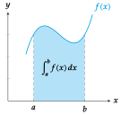
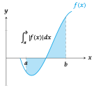

Integral calculus Antiderivative of a function Definition - Antiderivative of a function. Given a function $f(x)$, the function $F(X)$ is an antiderivative or primitive function of $f$ if it satisfies that $F’(x)=f(x)$ $\forall x \in \mathop{\rm Dom}(f)$. Example. The function $F(x)=x^2$ is an antiderivative of the function $f(x)=2x$ as $F’(x)=2x$ on $\mathbb{R}$. Roughly speaking, the calculus of antiderivatives is the reverse process of differentiation, and that is the reason for the name of antiderivative. Indefinite integral of a function As two functions that differs in a constant term have the same derivative, if $F(x)$ is an antiderivative of $f(x)$, so will be any function of the form $F(x)+k$ $\forall k \in \mathbb{R}$. This means that, when a function has an antiderivative, it has an infinite number of antiderivatives. Definition - Indefinite integral. The indefinite integral of a function $f(x)$ is the set of all its antiderivatives; it is denoted by $$\int{f(x)}\,dx=F(x)+C$$ where $F(x)$ is an antiderivative of $f(x)$ and $C$ is a constant. Example. The indefinite integral of the function $f(x)=2x$ is $$\int 2x\, dx = x^2+C.$$ Interpretation of the integral We have seen in a previous chapter that the derivative of a function is the instantaneous rate of change of the function. Thus, if we know the instantaneous rate of change of the function at any point, we can compute the change of the function. Example. What is the space covered by an free falling object? Assume that the only force acting upon an object drop is gravity, with an acceleration of $9.8$ m/s$^2$. As acceleration is the the rate of change of the speed, that is constant at any moment, the antiderivative is the speed of the object, $$v(t) = 9.8t \mbox{ m/s}$$ And as the speed is the rate of change of the space covered by object during the fall, the antiderivative of the speed is the space covered by the object, $$s(t) = \int 9.8t\, dt = 9,8\frac{t^2}{2}.$$ Thus, for instance, after 2 seconds, the covered space is $s(2) = 9.8\frac{2^2}{2} = 19.6$ m. Linearity of integration Given two integrable functions $f(x)$ and $g(x)$ and a constant $k \in \mathbb{R}$, it is satisfied that $\int{(f(x)+g(x))}\,dx=\int{f(x)}\,dx+\int{g(x)}\,dx$, $\int{kf(x)}\,dx=k\int{f(x)}\,dx$. This means that the integral of any linear combination of functions equals the same linear combination of the integrals of the functions. Elementary integrals $\int a\,dx=ax+C$, with $a$ constant. $\int x^n\,dx=\dfrac{x^{n+1}}{n+1}+C$ if $n\neq -1$. $\int \dfrac{1}{x}\, dx=\ln\vert x\vert+C$. $\int e^x\,dx=e^x+C$. $\int a^x\,dx=\dfrac{a^x}{\ln a}+C$. $\int \sin x\, dx=-\cos x+C$. $\int \cos x\, dx=\sin x+C$. $\int \tan x\, dx=\ln\vert\sec x\vert+C$. $\int \sec x\, dx = \ln\vert\sec x + \tan x\vert+C$. $\int \csc x\, dx= \ln\vert\csc x-\cot x\vert+C$. $\int \cot x \, dx= \ln\vert\sin x\vert+C$. $\int \sec^2 x\, dx= \tan x+ C$. $\int \csc^2 x\, dx= -\cot x+ C$. $\int \sec x \tan x\, dx= \sec x+ C$. $\int \csc x \cot x\, dx = -\csc x +C$. $\int \dfrac{dx}{\sqrt{a^2-x^2}}=\arcsin\dfrac{x}{a}+C$. $\int \dfrac{dx}{a^2+x^2}=\dfrac{1}{a}\arctan\dfrac{x}{a}+C$. $\int \dfrac{dx}{x\sqrt{x^2-a^2}}=\dfrac{1}{a}\sec^{-1}\dfrac{x}{a}+C$. $\int \dfrac{dx}{a^2-x^2}=\dfrac{1}{2a}\ln\left\vert\dfrac{x+a}{x-a}\right\vert+C$. Techniques of integration Unfortunately, unlike differential calculus, the is not a foolproof procedure to compute the antiderivative of a function. However, there are some techniques that allow to integrate some types of functions. The most common methods of integration are Integration by parts Integration by reduction Integration by substitution Integration of rational functions Integration of trigonometric functions Integration by parts Theorem - Integration by parts. Given two differentiable functions $u(x)$ and $v(x)$, $$\int{u(x)v’(x)}\,dx=u(x)v(x)-\int{u’(x)v(x)}\,dx,$$ or, writing $u’(x)dx=du$ and $v’(x)dx=dv$, $$\int{u}\,dv=uv-\int{v}\,du.$$ Proof From the rule for differentiating a product we have $$ (uv)’ = u’v + uv’ $$ and computing the integrals both sides we get $$ \begin{gathered} \int (uv)’ \, dx = \int u’v \, dx + \int uv’\, dx \Rightarrow\newline uv = \int v\,du + \int u\, dv \Rightarrow\newline \int{u}\,dv=uv-\int{v}\,du. \end{gathered} $$ To apply this method we have to choose the functions $u$ and $dv$ in a way so that the final integral is easier to compute than the original one. Example. To integrate $\int{x \sin x}\,dx$ we have to choose $u=x$ and $dv=\sin x\, dx$, so $du=dx$ and $v=-\cos x$, getting $$\int{x \sin x}\,dx=-x\cos x-\int (-\cos x)\,dx = -x\cos x +\sin x.$$ If we had chosen $u=\sin x$ and $dv=x\,dx$, we would have got a more difficult integral. Integration by reduction The reduction technique is used when we have to apply the integration by parts several times. If we want to compute the antiderivative $I_{n}$ that depends on a natural number $n$, the reduction formulas allow us to write $I_{n}$ as a function of $I_{n-1}$, that is, we have a recurrent relation $$\ I_{n}=f(I_{n-1},x,n)$$ so by computing the first antiderivative $I_0$ we should be able to compute the others. Example. To compute $I_{n}=\int{x^ne^x}\,dx$ applying integration by parts, we have to choose $u=x^n$ y $dv=e^x\,dx$, so $du=nx^{n-1}\,dx$ and $v=e^{x}$, getting $$\ I_{n}=\int{x^ne^x}\,dx=x^ne^x-n\int{x^{n-1}e^x}\,dx=x^ne^x-nI_{n-1}.$$ Thus, for instance, for $n=3$ we have $$ \begin{aligned} \int x^3 e^x\, dx &= I_3 = x^3e^x-3I_2 = x^3e^x-3(x^2e^x-2I_1) =\newline &= x^3e^x-3(x^2e^x-(xe^x-I_0) = x^3e^x-3(x^2e^x-(xe^x-e^x) =\newline &= e^x(x^3-3x^2+6x-6). \end{aligned} $$ Integration by substitution From the chain rule for differentiating the composition of two functions $$f(g(x))’ = f’(g(x))g’(x),$$ we can make a variable change $u=g(x)$, so $du=g’(x)dx$, and get $$\int f’(g(x))g’(x)\, dx = \int f’(u)\, du = f(u)+C = f(g(x))+C.$$ Example. To compute the integral of $\int{\dfrac{1}{x\log x}}\, dx$ we can make the substitution $u=\log x$, so $du=\frac{1}{x}dx$, and we have $$\int \frac{dx}{x\log x}=\int \frac{1}{\log x}\frac{1}{x}\,dx = \int \frac{1}{u}\,du = \log \vert u\vert+ C.$$ Finally, undoing the substitution we get $$\int \frac{1}{x\log x}\,dx= \log \vert\log x\vert + C.$$ Integration of rational functions Partial fractions decomposition A rational function can be written as the sum of a polynomial (with an immediate antiderivative) plus a proper rational function, that is, a rational function in which the degree of the numerator is less than the degree of the denominator. On the other hand, depending of the factorization of the denominator, a proper rational function can be expressed as a sum of simpler fractions of the following types Denominator with a single linear factor: $\dfrac{A}{(x-a)}$ Denominator with a linear factor repeated $n$ times : $\dfrac{A}{(x-a)^{n}}$ Denominator with a single quadratic factor: $\dfrac{Ax+B}{x^2+cx+d}$ Denominator with a quadratic factor repeated $n$ times: $\dfrac{Ax+B}{(x^2+cx+d)^n}$ Antiderivatives of partial fractions Using the linearity of integration, we can compute the antiderivative of a rational function from the antiderivative of these partial fractions $$ \begin{aligned} \int \frac{A}{x-a}\,dx &= A\log\vert x-a\vert+C,\newline \int \frac{A}{(x-a)^n}\,dx &= \frac{-A}{(n-1)(x-a)^{n-1}}+C \textrm{ si $n\neq 1$}.\newline \int \frac{Ax+B}{x^2+cx+d} &= \frac{A}{2}\log\vert x^2+cx+d\vert + \frac{2B-Ac}{\sqrt{4d-c^2}}\arctan \frac{2x+c}{\sqrt{4d-c^2}}+C. \end{aligned} $$ Integration of a rational function with a denominator with linear factors Example. Consider the function $f(x)=\dfrac{x^2+3x-5}{x^3-3x+2}$. The factorization of the denominator is $x^3-3x+2=(x-1)^2(x+2)$; it has a single linear factor $(x+2)$ and a linear factor $(x-1)$, repeated two times. In this case the decomposition in partial fractions is: $$ \begin{aligned} \frac{x^2+3x-5}{x^3-3x+2}&=\frac{A}{x-1}+\frac{B}{(x-1)^2}+\frac{C}{x+2} = \newline &= \frac{A(x-1)(x+2)+ B(x+2)+C(x-1)^2}{(x-1)^2(x+2)} = \newline &= \frac{(A+C)x^2+(A+B-2C)x+(-2A+2B+C)}{(x-1)^2(x+2)} \end{aligned} $$ and equating the numerators we get $A=16/9$, $B=-1/3$ and $C=-7/9$, so $$\frac{x^2+3x-5}{x^3-3x+2}= \frac{16/9}{x-1}+\frac{-1/3}{(x-1)^2}+\frac{-7/9}{x+2}.$$ Finally, integrating each partial fraction we have $$ \begin{aligned} \int \frac{x^2+3x-5}{x^3-3x+2}\, dx &= \int \frac{16/9}{x-1}\,dx+\int \frac{-1/3}{(x-1)^2}\,dx+\int \frac{-7/9}{x+2}\,dx = \newline &= \frac{16}{9}\int\frac{1}{x-1}\,dx-\frac{1}{3}\int(x-1)^{-2}\,dx- \frac{7}{9}\int \frac{1}{x+2}\,dx = \newline &= \frac{16}{9}\ln\vert x-1\vert+\frac{1}{3(x-1)}-\frac{7}{9}\ln\vert x+2\vert+C. \end{aligned} $$ Integration of a rational function with a denominator with simple quadratic factors Example. Consider the function $f(x)=\dfrac{x+1}{x^2-4x+8}$. In this case the denominator cannot be factorised as a product of linear factors, but we can write $$x^2-4x+8 = (x-2)^2+4,$$ so $$ \begin{aligned} \int \dfrac{x+1}{x^2-4x+8}\, dx &= \int \dfrac{x-2+3}{(x-2)^2+4}\,dx = \newline &= \int \dfrac{x-2}{(x-2)^2+4}\,dx + \int \dfrac{3}{(x-2)^2+4}\,dx = \newline &= \frac{1}{2}\ln\vert(x-2)^2+4\vert + \dfrac{3}{2}\arctan\left(\frac{x-2}{2}\right)+C. \end{aligned} $$ Integration of trigonometric functions Integration of $\sin^n x\cos^m x$ with $n$ or $m$ odd If $f(x)=\sin^n x\cos^m x$ with $n$ or $m$ odd, then we can make the substitution $t=\sin x$ or $t=\cos x$, to convert the function into a polynomial. Example. $$\int \sin^2 x\cos^3 x\, dx = \int \sin^2 x\cos^2 x\cos x\, dx = \int \sin^2 x(1-\sin^2 x)\cos x\, dx,$$ and making the substitution $t=\sin x$, so $dt = \cos x dx$, we have $$\int \sin^2 x(1-\sin^2 x)\cos x\, dx = \int t^2(1-t^2)\, dt = \int t^2-t^4 \, dt = \frac{t^3}{3}-\frac{t^5}{5}+C.$$ Finally, undoing the substitution we have $$\int \sin^2 x\cos^3 x\, dx = \frac{\sin^3 x}{3}-\frac{\sin^5 x}{5}+C.$$ Integration of $\sin^n x\cos^m x$ with $n$ and $m$ even If $f(x)=\sin^n x\cos^m x$ with $n$ and $m$ even, then we can make the following substitutions to simplify the integration $$ \begin{aligned} \sin^2 x &= \frac{1}{2}(1-\cos(2x))\newline \cos^2 x &= \frac{1}{2}(1+\cos(2x))\newline \sin x\cos x &= \frac{1}{2}\sin(2x) \end{aligned} $$ Example. $$ \begin{aligned} \int \sin^2 x\cos^4 x\, dx &= \int (\sin x\cos x)^2\cos^2 x\, dx = \int \left(\frac{1}{2}\sin(2x)\right)^2\frac{1}{2}(1+\cos(2x))\,dx =\newline &= \frac{1}{8}\int \sin^2(2x)\,dx+\frac{1}{8}\int \sin^2(2x) \cos(2x)\,dx, \end{aligned} $$ the first integral is of the same type and the second one of the previous type, so $$\int \sin^2 x\cos^4 x\, dx = \frac{1}{32}x-\frac{1}{32}\sin(2x)+\frac{1}{24}\sin^3(2x).$$ Products of sines and cosines The equalities $$ \begin{aligned} \sin x\cos y &= \frac{1}{2}(\sin(x-y)+\sin(x+y))\newline \sin x\sin y &= \frac{1}{2}(\cos(x-y)-\cos(x+y))\newline \cos x\cos y &= \frac{1}{2}(\cos(x-y)+\cos(x+y)) \end{aligned} $$ transform products in sums, simplifying the integration. Example. $$ \begin{aligned} \int \sin x\cos 2x\, dx &= \int \frac{1}{2}(\sin(x-2x)+\sin(x+2x))\,dx = \newline &= \frac{1}{2}\int \sin (-x)\,dx +\frac{1}{2}\int \sin 3x\,dx = \newline &= \frac{1}{2}\cos(-x)- \frac{1}{6}\cos 3x +C. \end{aligned} $$ Rational functions of sines and cosines If $f(x,y)$ is a rational function then the function $f(\sin x,\cos x)$ can be transformed in an rational function of $t$ with the following substitutions $$\tan \frac{x}{2}=t \quad \sin x=\frac{2t}{1+t^2} \quad \cos x = \frac{1-t^2}{1+t^2} \quad dx = \frac{2}{1+t^2}dt.$$ Example. $$\int \frac{1}{\sin x}\,dx = \int \frac{1}{\frac{2t}{1+t^2}}\frac{2}{1+t^2}\,dt = \int \frac{1}{t}\,dt = \log\vert t\vert+C = \log\vert\tan\frac{x}{2}\vert+C.$$ Definite integral Definition - Definite integral. Let $f(x)$ be a function which is continuous on an interval $[a, b]$. Divide this interval into $n$ subintervals of equal width $\Delta x$ and choose an arbitrary point $x_i$ from each subinterval. The definite integral of $f$ from $a$ to $b$ is defined to be the limit $$\int_a^b f(x)\,dx = \lim_{n\rightarrow \infty}\sum_{i=1}^n f(x_i)\Delta x.$$ Theorem - First fundamental theorem of Calculus. If $f(x)$ is continuous on the interval $[a,b]$ and $F(x)$ is an antiderivative of $f$ on $[a,b]$, then $$\int_a^b f(x)\,dx = F(b)-F(a)$$ Example. Given the function $f(x)=x^2$, we have $$\int_1^2 x^2\,dx = \left[\frac{x^3}{3}\right]_1^2 = \frac{2^3}{3}-\frac{1^3}{3} = \frac{7}{3}.$$ Properties of the definite integral Given two functions $f(x)$ and $g(x)$ integrable on $[a,b]$ and $k \in \mathbb{R}$ the following properties are satisfied: $\int_{a}^{b}(f(x)+g(x))\,dx=\int_{a}^{b}f(x)\,dx+\int_{a}^{b}g(x)\,dx$ (linearity) $\int_{a}^{b}{kf(x)}\,dx=k\int_{a}^{b}{f(x)}\,dx$ (linearity) $\int_{a}^{b}{f(x)\,dx} \leq \int_{a}^{b}{g(x)\,dx}$ si $f(x)\leq g(x)\ \forall x \in [a,b]$ (monotony) $\int_{a}^{b}{f(x)\,dx} = \int_{a}^{c}{f(x)\,dx}+\int_{c}^{b}{f(x)\,dx}$ for any $c\in(a,b)$ (additivity) $\int_a^b f(x)\,dx = -\int_b^a f(x)\,dx$ Area calculation Area between a positive function and the $x$ axis If $f(x)$ is an integrable function on the interval $[a,b]$ and $f(x)\geq 0\ \forall x\in[a,b]$, then the definite integral $$\int_a^b f(x)\,dx$$ measures the area between the graph of $f$ and the $x$ axis on the interval $[a,b]$.  Area between a negative function and the $x$ axis If $f(x)$ is an integrable function on the interval $[a,b]$ and $f(x)\leq 0\ \forall x\in[a,b]$, then the area between the graph of $f$ and the $x$ axis on the interval $[a,b]$ is $$-\int_a^b f(x)\,dx.$$ Area between a function and the $x$ axis In general, if $f(x)$ is an integrable function on the interval $[a,b]$, no matter the sign of $f$ on $[a,b]$, the area between the graph of $f$ and the $x$ axis on the interval $[a,b]$ is $$\int_a^b \vert f(x)\vert\,dx.$$  Area between two functions If $f(x)$ and $g(x)$ are two integrable functions on the interval $[a,b]$, then the area between the graph of $f$ and $g$ on the interval $[a,b]$ is $$\int_{a}^{b}{\vert f(x)- g(x)\vert\,dx}.$$ Integral Area Previous One variable differential calculus Next Ordinary differential equations